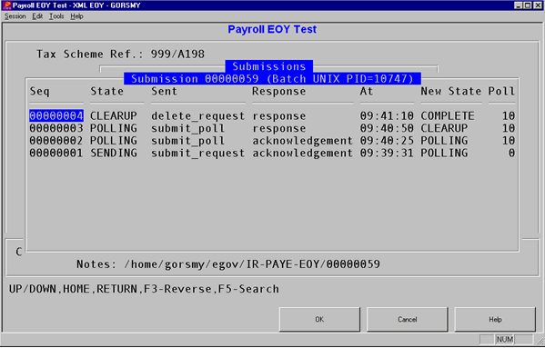

Understanding the Protocols
Submission is a two-sided conversation rather than simply sending the data. When the data is submitted, there are a number of possible responses, and each response requires further action. The rules of this are known as the ?Protocol?, and the stage you have reached is known as the ?State?.
will submit the return using a background process. You will be shown the progress on screen, but note that exiting this screen will not stop the background process. The reason for using a background process is technical; the PROGRESS session that creates the XML file has to be run with a UTF-8 code page so that the gateway will be able to read it.
